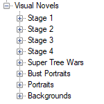

Creating Visual Novels
To create dialog you’ll need to use the Visual Novels node. You can see your VN as well as portraits and backgrounds in your Content/Visual Novels folder. Because it’s a standalone editor, it is possible to create VN entirely by hand by handpicking portraits for each dialog but you can also use the characters created before instead.
It’s entirely possible to create a non-linear dialog as well, we won’t go into details but we’ll cover it a bit.